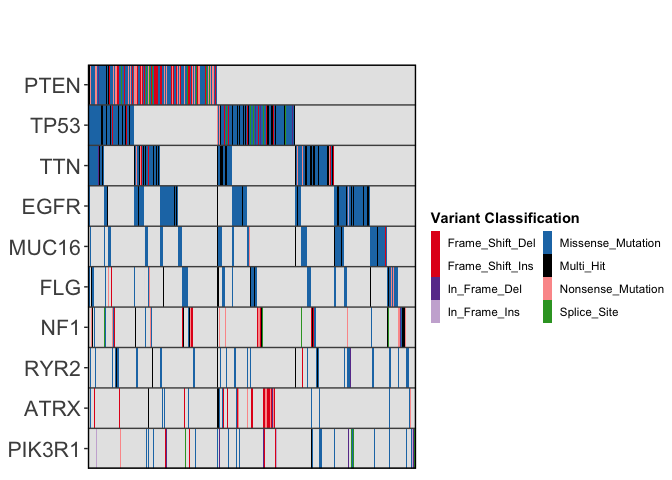

ggoncoplot creates interactive oncoplots from mutation level datasets
Installation
You can install the development version of ggoncoplot like so:
remotes::install_github('selkamand/ggoncoplot')Usage
For complete usage, see manual
Input
The input for ggoncoplot is a data.frame with 1 row per mutation in cohort and columns describing the following:
Gene Symbol
Sample Identifier
(optional) mutation type
(optional) tooltip (character string: what we show on mouse hover over a particular mutation)
These columns can be in any order, and named anything. You define the mapping of your input dataset columns to the required features in the call to ggoncoplot
library(ggoncoplot)
# TCGA GBM dataset from TCGAmuations package
gbm_csv <- system.file(package='ggoncoplot', "testdata/GBM_tcgamutations_mc3_maf.csv.gz")
gbm_df <- read.csv(file = gbm_csv, header=TRUE)
gbm_df |>
ggoncoplot(
col_genes = 'Hugo_Symbol',
col_samples = 'Tumor_Sample_Barcode',
col_mutation_type = 'Variant_Classification',
topn = 10,
interactive = FALSE
)